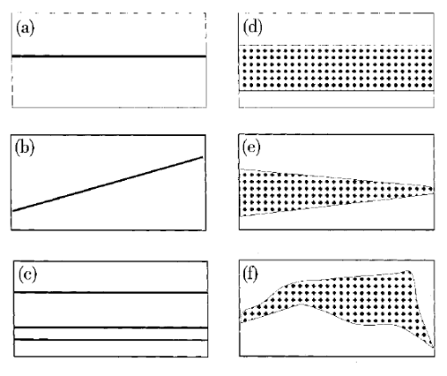

Les origines de la synthèse granulaire remontent aux travaux de Dennis Gabor à la fin des années 1940 et aux recherches menées par Iannis Xenakis qu’il concrétise en composant Concret PH (1958) et Analogique A et B (1958-59). Cette technique de synthèse permet de produire une texture continue grâce à une énorme masse d’éléments discontinus. « Le son, tout comme la lumière, peut être considéré sous forme d’ondes ou particules. La synthèse granulaire construit des événements sonores à partir de milliers de grains sonores ». Avec cette analogie, un grain sonore correspond à un photon, à une particule. Seul, il n’est pas considéré comme un événement sonore. Mais pour le devenir, il est nécessaire d’agglomérer des milliers de grains sur un temps donné resserré.
Pour générer ce type de structure sonore, nous disposons de plusieurs contrôles qui peuvent évoluer dans le temps. Cependant, l’origine des grains implique certaines spécificités de réglage. En effet, si nous utilisons des oscillateurs comme source sonore, nous devons déterminer la forme d’onde (voire une technique de synthèse) et la fréquence de chaque grain. Toutefois, si nous utilisons un enregistrement, nous devons déterminer le fragment à extraire et donc la position initiale de lecture dans l’échantillon, le sens et la vitesse de lecture.
Après ces spécificités, les autres paramètres sont communs aux différentes sources sonores. Pour chaque grain, nous devons choisir une intensité et la formater par une enveloppe d’amplitude particulière. La durée d’un grain est généralement de l’ordre du millième de seconde et elle peut varier entre une et cent millisecondes.
Nous pouvons pulvériser les grains de manière synchrone ou asynchrone. La différence entre ces deux modes de pulvérisation réside dans la gestion du temps pour organiser les grains. La synthèse granulaire synchrone séquence ses grains suivant un tempo fixe. Tandis que la synthèse granulaire asynchrone pulvérise ses grains dans un intervalle de temps donné. En outre, nous devons déterminer la densité de la pulvérisation des grains de ces deux modes.
En synthèse granulaire, nous générons des masses sonores qu’on qualifie de nuages. Ils peuvent être structurés de deux manières. La première consiste à délimiter un nuage à partir d’une bande de fréquence plus ou moins large et qui peut évoluer dans le temps (cf. colonne de droite de la figure - Curtis Roads, Microsound, Cambridge, The MIT Press, 2001, p. 105). Le second procédé est de structurer un nuage par un empilement de strates. Cette dernière structure s’apparente à de la synthèse additive (cf. colonne de gauche de la figure). Si nous utilisons une synthèse asynchrone sur ce dernier type de structure, le tempo de chaque strate peut être indépendant des autres. En effet, nous avons la possibilité d’animer nos nuages par une pulsation commune ou obtenir des nuages à tempo arythmique.

Le dernier paramètre de contrôle en synthèse granulaire porte sur la gestion de l’espace. Suivant son dispositif de projection sonore, nous pouvons positionner et animer un nuage dans un champ stéréophonique (gauche, droite et profondeur) ou dans un espace à deux, voire à trois dimensions (gauche, droite, devant, derrière, voire en haut et en bas). Dans le tableau, nous récapitulons les différents paramètres de la synthèse granulaire. Dans les deux premières lignes, je distingue l’origine de la source sonore entre un oscillateur ou un échantillon.
| Forme d’onde (voire une technique de synthèse) | Échantillon |
| Fréquence | Position initiale, sens et vitesse de lecture |
| Intensité | |
| Forme de l’enveloppe d’amplitude | |
| Durée du grain | |
| Mode de pulvérisation (synchrone ou asynchrone) | |
| Densité de la pulvérisation | |
| Structure du nuage (empilement ou agglomérat) | |
| Position dans l’espace et mouvement du nuage | |
Lorsque nous utilisons un échantillon comme source sonore, nous pouvons séquencer des fragments issus de cet échantillon et généralement nous sélectionnons les grains aléatoirement. La synthèse concaténative est conçue sur le même principe, on concatène des fragments audio. Néanmoins, des différences majeures distinguent ces deux techniques de synthèse et je les établis au début de la page suivante.